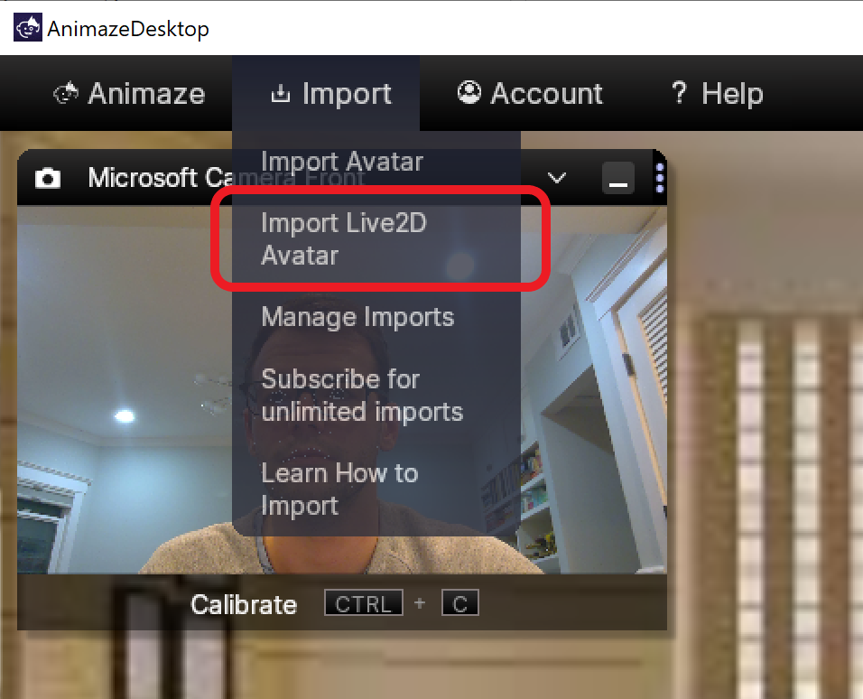
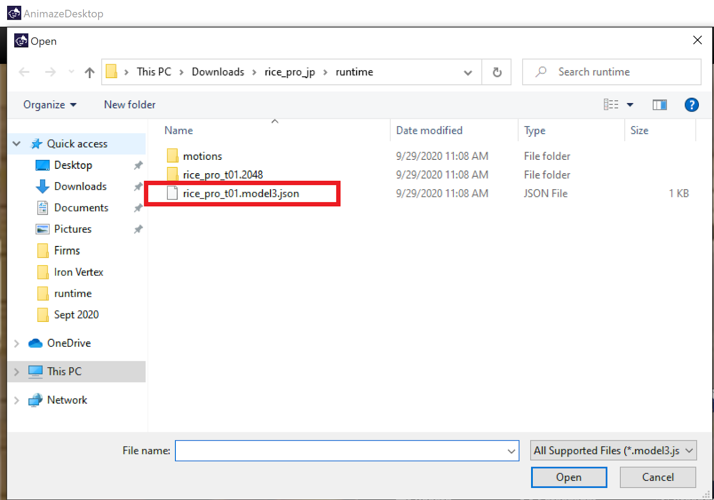
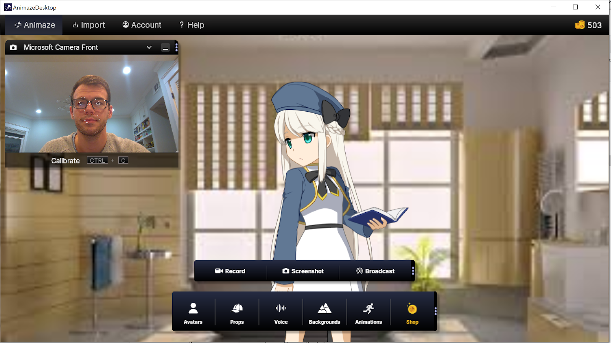
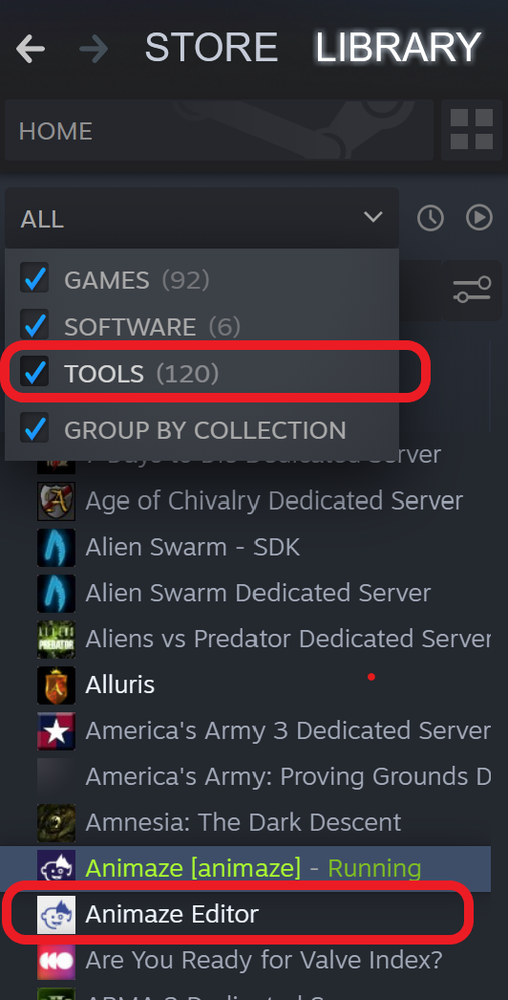

Live2DモデルをAnimazeにインポートする方法
概要
Animazeを使用すると、いくつかの簡単な手順で、ほぼすべてのLive2Dモデルを高性能アバターに変換できます。Animazeアバターとして使用したいLive2Dモデルがある場合は、このガイドを参考にしてください。このガイドは、FaceRig用アバターとして使用したモデルを含む、すべてのLive2Dモデルに適しています。
Live2DはデフォルトでAnimazeに組み込まれています ーLive2DモデルのためのDLCを使用する必要はありません。ここから無料でanimazeをダウンロード。
備考：Live2Dモデルのインポートを簡単にする、Animazeの最新の改善情報をこのドキュメントに更新しました。このページにあった古い指示は、正確なものに編集されました。
Live2Dモデルの要件とファイル形式
Live2DモデルをAnimazeで使用するには、Live2D Cubism Editorバージョン3.0以降で作成する必要があります。Cubism 3.0は2017年春にリリースされたため、モデルがそれ以降で作成された場合、この要件を満たすでしょう。
ただしCubism 2系で作られているFaceRig用のLive2Dアバターは、Cubism 3.0(2017年春公開)以降のバージョンにコンバートする作業が必要です。Cubism 3.0以降のエディターで、Live2Dモデルファイルを編集しコンバート作業を行った後、組み込みデータを書き出す必要があります。
Live2DモデルをAnimazeにインポートするには、Live2Dモデルの組み込みファイルが必要です。 また、それらを標準のフォルダー階層（Standard folder Hierarchy)に編成する必要があります。
さらに、「model3.json」ファイルと「.moc3」ファイルは同じファイル名を使用する必要があります（例:「myavatar.moc3」と「myavatar.model3.json」）。ファイル名が異なる場合、モデルのファイルをAnimazeへインポートすると、インポートが失敗する可能性があります。
手順①：Animazeにモデルをインポートする
Live2Dモデル（FaceRig用のモデルも含む）をAnimazeにインポートする最も簡単な方法は、Animazeに組み込まれているLive2Dインポート機能を使用することです。
Animazeを開き、上部のメニューバーの「インポート(Import)」をクリックして、「Live2Dアバターのインポート(Import Live2D Avatar)」を選択するだけです。

ファイルブラウザが開いたら、Live2Dモデルのフォルダーに移動し、アバターの「model 3.json」ファイルを選択して、「開く」をクリックします。

あなたのアバターがAnimazeに表示されます！
重要: Animazeの無料版を使用している場合（つまり、Animazeのサブスクリプションを購入していない場合）、モデルのインポートには$ .99の料金がかかります。

これはモデル一体につき、1回限りの料金です。アバターの「model3.json」ファイルまたは「.moc3」ファイルのファイル名を変更しない限り、アバターを更新、変更、編集して、何回でも再インポートできます（インポート料金を一度支払うだけで済みます）。
Animazeサブスクライバー(有料版) の場合、サブスクリプションの一部として無料・無制限にインポートが可能です。
手順②：アバターを動かしてみよう
アバターをインポートしたので、好きなようにAnimazeで自由に動かせます。ほとんどの場合、Animazeはモデルのモーションパラメータ、特殊アクション、及び特殊ポーズを自動的にインポートしてくれます。
アバターの動作を確認して、期待通りに機能していることを確認してください。問題がなければ、この先の手順を従う必要はありません。
Live2DモデルをAnimazeにインポートすることに成功しました。おめでとうございます！
アバターを修正する必要がある場合...
アバターが期待通りに動作しない場合は、アバターをAnimaze Editorにインポートして、いくつか簡単な修正をする必要があります。
Animaze Editorでは、Live2Dアバターに関する2つの一般的な問題を修正できます。
1．アバターのぼやけ・低解像度
2．トラッキング入力に応答しない特定の顔や体の部分
「関連記事のリンク」
以下の内容は、Live2Dアバターのデバッグに関する記事です。
Animaze Editorにモデルをインポート
初めに、Steamから無料のAnimaze Editorをダウンロードしてください。Steamライブラリに移動し、ライブラリのプルダウンメニューから「ツール (Tool)」のチェックボックスが選択されていることを確認してから、Animaze Editorを選択してインストールします。

エディターを開き、Live2Dアバターをインポートします。下のリンクの指示に従って、Live2Dアバターをエディターにインポートします。
https://www.animaze.us/manual/gettingstarted2d/gettingstarted
もしくは、下記の説明に従ってください
-
エディタを開き、「アセット (Assets)」メニューをクリックして、「Live2Dアバターのインポート (Import Live2D Avatar)」を選択します。
-
モデルの「.json」ファイルを選択し、「開く」をクリックします。
-
インポートリストの全チェックボックスを選択して、すべてのモデルファイルがインポートされていることを確認します。
-
表示されるインポートログ (Import Log) を閉じて、エディターのビューポートでアバターが表示されます。
Animaze EditorでLive2Dモデルのデバッグ作業
レンダリングサイズを上げてぼやけを修正する方法：
モデルがぼやけて見える場合は、レンダリングサイズを変更する必要があります。
最初に、画面左側の階層パネル (hierarchy panel)でアバターの名前をクリックすると、右側にアバターインスペクターが表示されます。下にスクロールして、「Live2Dオプション (Live2D Options)」をクリックします。 レンダリングサイズ (Render Size) のオプションが表示されます。

アバターの視覚的忠実度 (Visual Fidelity)を上げるには、「レンダリングサイズ」の数値を上げます。Animazeは最大4096 x 4096ピクセルと最小512x512ピクセルのレンダリングサイズをサポートします。Animaze PCアプリは、標準でLive2Dモデルをモデルファイル、またはAnimazeエディターで設定したレンダリングサイズを表示します。AnimazePCアプリの「2D Avatar Render Scale」の設定で、アバターの解像度を変更することもできますが、4096以上にレンダリングスケールを設定することはできません。
パラメータのリマッピングでアバターの動きを修正：
次に、モデルのパラメータが正しくマッピングされていることを確認します。アバターの一部がAnimazeのトラッキング入力に応答しない場合は、エディターでパラメーターのマッピングを更新する必要があります。Live2DモデルのすべてのパラメーターがLive2Dの標準パラメーター名にである場合、それらすべてをAnimazeに自動的にインポートされます。ただし、モデルをカスタムパラメータ名で使用している場合、各カスタムパラメータ名を対応するデフォルトパラメータ名にマッピングする必要があります。これでAnimazeは、トラッキング入力に応じてモデルを動かす方法を認識します。
右側のアバターインスペクターパネル (avatar inspector panel) で、「パラメーターリマッパー (Parameter Remapper)」までスクロールし、クリックしてツールメニューを展開します。

「デフォルトパラメータ名 (Default Parameter Name) 」の下に、Animazeでサポートされているすべてのディフォルトパラメータが表示されます。これらの各パラメーターが、アバターのカスタムパラメーター名と一致していることを確認してください。パラメータが定義されていない場合、Animazeによって認識されず、トラッキング入力に反映されません。
パラメータリストを確認し、モデルが使用するすべてのパラメータが正しくマッピングされていることを確認してください。
おめでとうございます！ アバターを修正したので、変更を保存して、エディターから「.avatar」バンドルとしてエクスポートすることができます。
手順⑤：Live2Dモデルを「.avatar」ファイルとしてエクスポートする
「アバターバンドルの作成」の手順1〜4に従ってください。
https://www.animaze.us/manual/jpnlive2d/sendtowindosjpn
注意:「.avatar」ファイルの名前は、「model3.json」のファイル名と同じである必要があります。同じでない場合、新しいインポートとして認識されます。エディターは、「.avatar」ファイルの名前を自動的に割り当てますので、変便しないことをおすすめします。
手順⑥：更新した「.avatar」をAnimazeにインポートします。
「アバターバンドルのインポート」の手順1〜4に従います。
https://www.animaze.us/manual/jpnlive2d/sendtowindosjpn
注意: Animazeのサブスクライバーではない、またはLive2Dモデルの直接インポートの料金を既に支払っている場合は、インポートの料金を再度支払う必要はありません。「.avatar」ファイル名が「model3.json」ファイル名と同じであることを確認してください。
以上ですべての作業は完了です！お疲れ様でした！
詳細はこちら